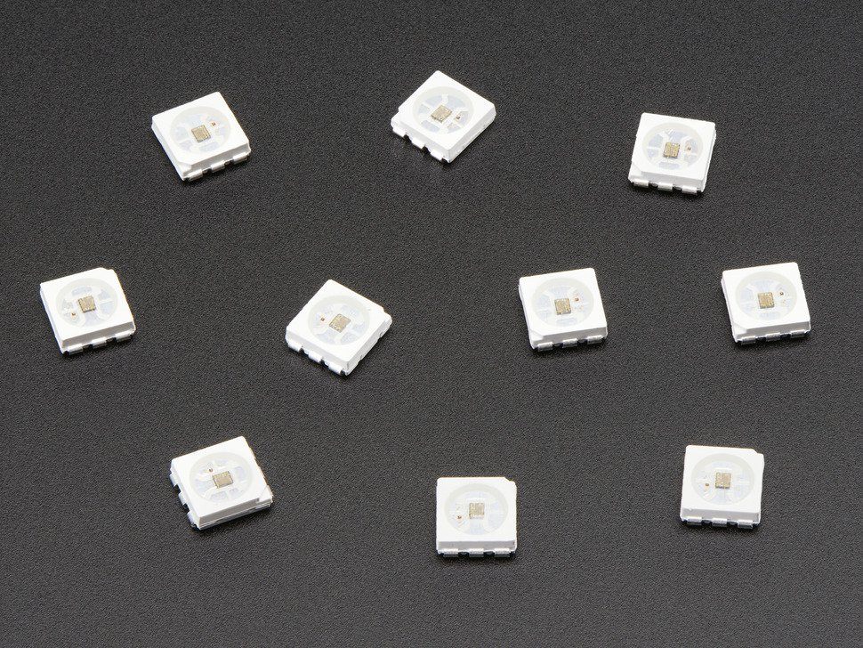
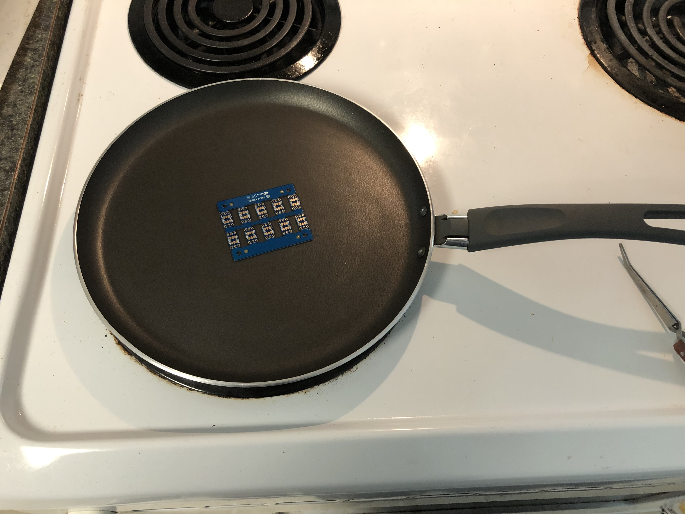
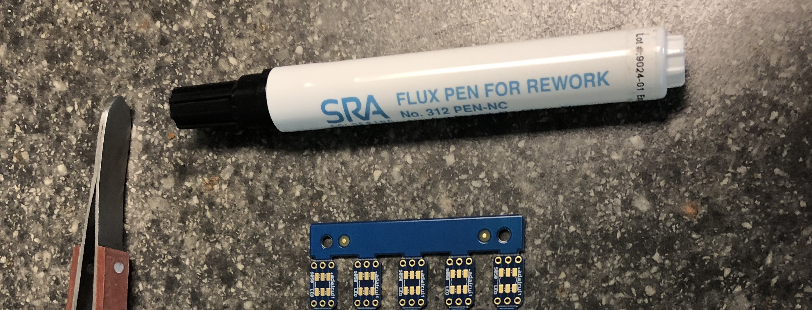

Reflow Soldering with a Skillet
Some background
To help out a relative with a project, I acquired a bunch of surface-mount LEDs.

The only problem with surface-mount components is that soldering them is a pain.
The key issue is heating up all the little solder blobs simultaneously. A heat gun would blow away lighter components, and sans a reflow oven, how is one supposed to get all those solder blobs to liquefy simultaneously?
Some folks might repurpose an old toaster oven, but me, I went all-out skillet soldering.
Reflow soldering with a skillet
You can do reflow soldering on top of your stove with just an old non-stick skillet.
The general steps are:
- Tin the pads on your board. (Flux helps make this step easy and clean.)
- Warm up the component and the board in the skillet, as close to the reflow temperature profile as you can get.
- Apply flux to the component’s pads.
- Carefully place the component on top of the solder blobs.
If all goes well, the solder blobs will glom onto the component’s pads, and the component will “float” on top of the solder.

Flux is great
Solder bridges are nasty; multiple pads get gooed together with solder, and it’s fun times to try to clean up with just a soldering iron and no flux. Flux is your best friend when soldering.
Flux comes in several forms, from pastes, to wires, to flux pens that dispense an alcohol-based flux solution, like this guy:

Until this project, I didn’t understand what my electrical engineering friends were carrying on about regarding flux. After accidentally making four or five solder bridges–and fixing them with flux–I can attest that this stuff awesome.